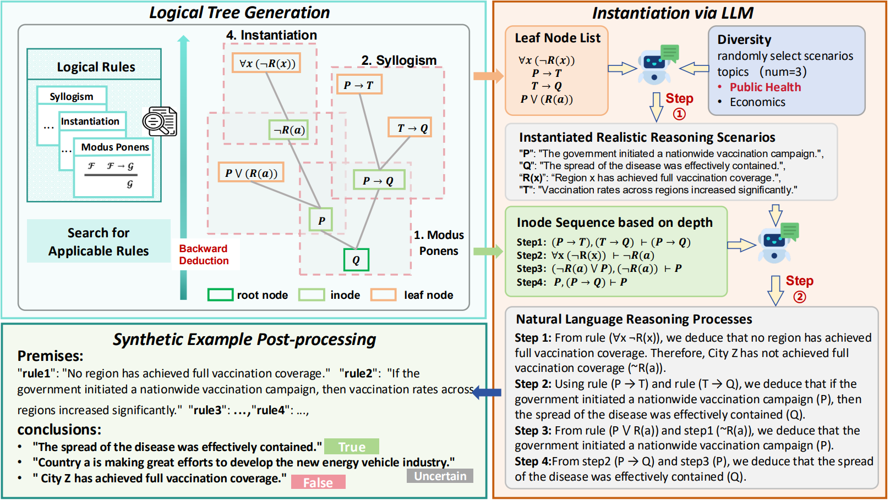

TL;DR:
LogicTree addresses the scarcity of high-quality complex reasoning data by algorithmically generating intricate logical structures and grounding them in contextually rich, diverse real-world scenarios, thereby teaching LLMs robust, generalizable multi-step logical reasoning.
Motivation
Large Language Models (LLMs) struggle with complex, multi-step logical reasoning despite their impressive performance on other tasks. While synthetic data generation is a promising direction to enhance reasoning capabilities, existing methods rely on rigid predefined templates that limit complexity and fail to capture real-world contextual nuances, restricting LLMs’ ability to generalize.
Problem
Current synthetic logical reasoning datasets suffer from two critical limitations:
- Insufficient Complexity: They generate simplistic reasoning patterns with limited rule types and shallow reasoning depths.
- Poor Real-World Instantiation: They combine entities randomly without contextual relevance (e.g., “unicorn wins lottery → moon turns to cheese”), which weakens robustness and causes models to memorize spurious correlations rather than learn generalizable reasoning.
Intuition

LogicTree synthesizes complex logical reasoning data through a three-step pipeline:
- Symbolic Tree Generation via Backward Deduction:
Instead of templates, the method uses structural pattern matching on first-order logic formulas to iteratively expand reasoning trees backward from a conclusion. This creates deep, complex trees (depth 2–15) mixing propositional and first-order logic rules (e.g., Modus Ponens, Hypothetical Syllogism). Two-Stage LLM Instantiation:
- Stage 1 (Scenario Building): Assigns contextually relevant real-world entities to leaf nodes (e.g., mapping logical symbols to “vaccination campaigns” and “public health”).
- Stage 2 (Process Translation): Translates the symbolic reasoning chain into coherent, step-by-step natural language explanations within that scenario.
- Diversity Control:
Each symbolic tree is instantiated into multiple diverse scenarios (3 by default) across different domains (economics, public health, etc.) to prevent overfitting to specific entity relationships and promote generalizable reasoning.
Result
- Performance Gains: Training on LogicTree data achieves an average accuracy improvement of 9.4% across benchmarks (LogicBench, LogiQA 2.0, FOLIO, BBH, AGIEval) compared to vanilla models. It significantly outperforms baselines like PARARULE and FLD×2.
- Multi-Step Superiority: On Multi-LogiEval (1–5 reasoning steps), LogicTree shows superior scaling; while baseline performance drops sharply with depth, LogicTree maintains high accuracy even at 5-step reasoning.
- Data Quality: From 5,000 symbolic trees, 15,000 instantiated scenarios were generated, with 8.73% filtered for logical consistency, resulting in 13.8k high-quality training examples.
- Ablation Insights: Both complex tree structures and diverse instantiation (multiple scenarios per tree) are critical—using only one scenario causes overfitting, while diversity enables true logical generalization.